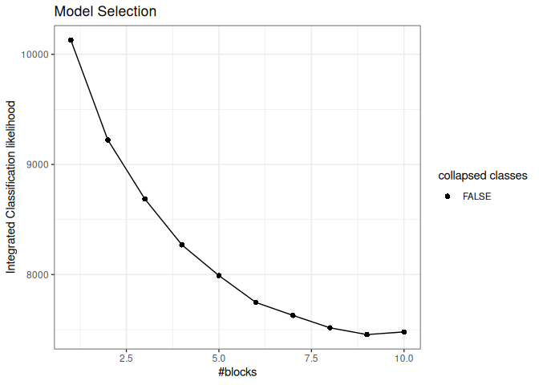
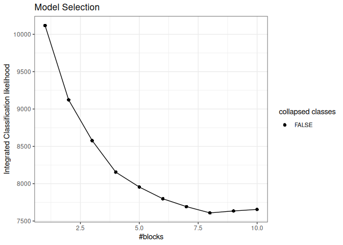
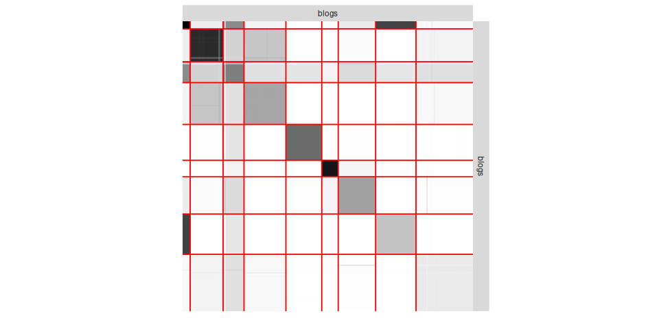
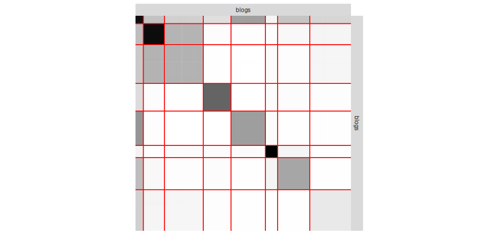

Description
When a network is partially observed (here, NAs in the adjacency matrix rather than 1 or 0 due to missing information between node pairs), it is possible to account for the underlying process that generates those NAs. ‘missSBM’, presented in ‘Barbillon, Chiquet and Tabouy’ (2022) 10.18637/jss.v101.i12, adjusts the popular stochastic block model from network data sampled under various missing data conditions, as described in ‘Tabouy, Barbillon and Chiquet’ (2019) 10.1080/01621459.2018.1562934.
missSBM covers a variety of sampling designs for the missing dyads/nodes, split into two families depending on whether the sampling mechanism can be ignored:
-
Missing At Random (MAR):
"dyad","node","covar-dyad","covar-node","snowball"— whether a dyad/node is observed does not depend on the network itself, so a naive fit on the observed part alone is already consistent. -
Missing Not At Random (MNAR):
"double-standard","block-node","block-dyad","degree"— the sampling depends on the underlying block structure, the edge value, or the node degree, and must be modeled jointly with the network to avoid biased inference.
Installation
The last CRAN version is available via
install.packages("missSBM")The development version is available via
devtools::install_github("GrossSBM/missSBM")Illustration
We illustrate missSBM on the French political blogosphere network (frenchblog2007, bundled with the package): about 190 blogs, edges standing for hyperlinks, each blog labeled by political party.
Fit a SBM on the fully observed network
library(missSBM)
library(igraph)
data(frenchblog2007)
frenchblog2007 <- delete_vertices(frenchblog2007, which(degree(frenchblog2007) == 0))
adjacency <- as_adjacency_matrix(frenchblog2007, sparse = FALSE)
full_fit <- estimateMissSBM(adjacency, vBlocks = 1:10, sampling = "node",
control = missSBM_param(trace = FALSE))
plot(full_fit, "icl")
Simulate a Missing Not At Random sampling and account for it
Real-world network data collection is rarely complete. We simulate a block-node sampling design (MNAR): blogs belonging to smaller political parties are less likely to have been surveyed than blogs in bigger ones, a mechanism tied to the very block structure we are trying to recover – exactly the kind of design a naive analysis of the observed part alone would get wrong.
set.seed(1234)
block_prop <- full_fit$bestModel$fittedSBM$blockProp
sampling_rate <- ifelse(block_prop < 0.1, 0.2, 0.8)
partial_network <- observeNetwork(adjacency, sampling = "block-node",
parameters = sampling_rate,
clusters = full_fit$bestModel$fittedSBM$memberships)
mean(is.na(partial_network)) # fraction of missing dyads
partial_fit <- estimateMissSBM(partial_network, vBlocks = 1:10, sampling = "block-node",
control = missSBM_param(trace = FALSE, iterates = 2))
plot(partial_fit, "icl")
Despite about 8% of the dyads missing under this informative design, missSBM recovers a block structure close to the one found on the fully observed network (Adjusted Rand Index, the closer to 1 the better):
aricode::ARI(full_fit$bestModel$fittedSBM$memberships, partial_fit$bestModel$fittedSBM$memberships)
par(mfrow = c(1, 2))
plot(full_fit$bestModel, "expected", dimLabels = list(row = "blogs", col = "blogs"))

See vignette("case_study_war_networks") and the JSS article for a more comprehensive tour, including covariates and further sampling designs.
References
Please cite our work using the following references:
Barbillon, P., Chiquet, J., & Tabouy, T. (2022). missSBM: An R Package for Handling Missing Values in the Stochastic Block Model. Journal of Statistical Software, 101(12), 1–32. DOI: 10.18637/jss.v101.i12
Timothée Tabouy, Pierre Barbillon & Julien Chiquet (2019) “Variational Inference for Stochastic Block Models from Sampled Data”, Journal of the American Statistical Association, DOI: 10.1080/01621459.2018.1562934